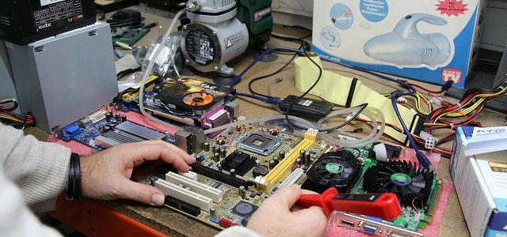
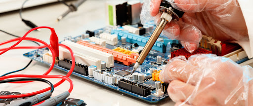

El mantenimiento informático consiste en una serie de acciones que garantiza el correcto funcionamiento de los equipos informáticos y todo el sistema informático, tanto si se trata de funcionamiento de software como de hardware. ... Configuración, reparación e instalación de software y drivers.

